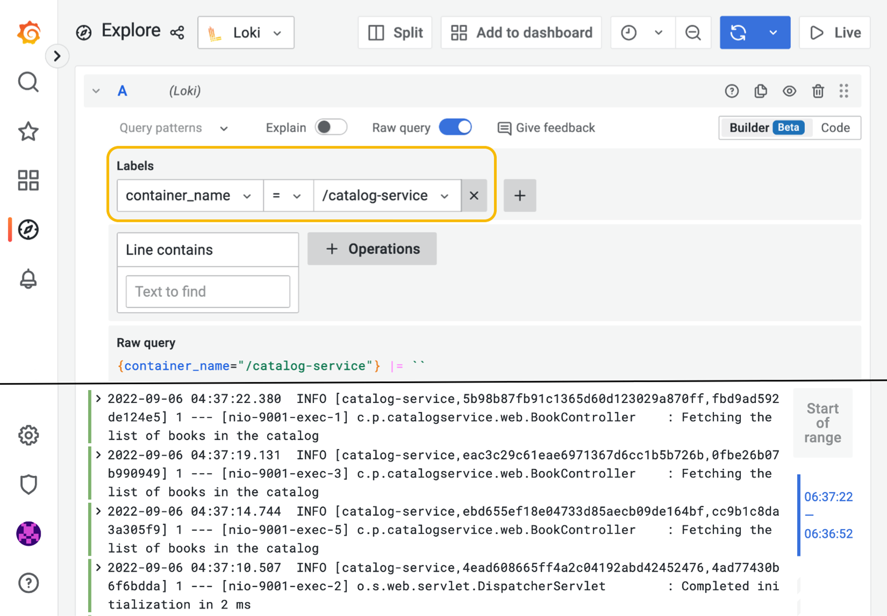

14.1 在 Kubernetes 上配置应用
根据 15-Factor 方法论，配置是指一切随部署环境而变化的东西。我们在第 4 章开始接触配置，从那时起我们使用了不同的配置策略：
- 随应用打包的属性文件——它们可以充当应用支持何种配置数据的规范说明，对于定义合理的默认值也很有用，主要面向开发环境。
- 环境变量——任何操作系统都支持环境变量，因此它们具有很好的可移植性。它们很适合定义与应用部署所在的基础设施或平台相关的配置数据，例如激活的 profiles、主机名、服务名和端口号。我们曾在 Docker 和 Kubernetes 中使用过它们。
- 配置服务——它提供配置数据的持久化、审计和问责。它适合定义应用特异的配置数据，例如功能开关、线程池、连接池、超时时间，以及第三方服务的 URL 等。我们采用了 Spring Cloud Config 这个策略。
这三个策略足够通用，可以用于在任何云环境和任何服务模型（CaaS、PaaS、FaaS）中配置应用。当涉及 Kubernetes 时，还有一个由平台原生提供的额外配置策略：ConfigMaps 和 Secrets。
这些是定义与应用部署所在的基础设施和平台相关配置数据的非常便捷的方式：服务名（由 Kubernetes Service 对象定义）、访问平台上运行的其他服务所需的凭据和证书、优雅停机、日志记录和监控等。你可以使用 ConfigMaps 和 Secrets 来补充或完全替代配置服务所做的事情。选择哪种取决于具体场景。无论如何，Spring Boot 为所有这些选项都提供了原生支持。
对于 Polar Bookshop 项目，我们将使用 ConfigMaps 和 Secrets 代替 Config Service 来在 Kubernetes 环境中配置应用。不过，到目前为止我们在 Config Service 上所做的所有工作，都会让把它纳入 Polar Bookshop 在 Kubernetes 上的整体部署变得很容易。在本节中，我将与你分享一些让 Config Service 得以用于生产环境的最终考虑，以备你希望扩展示例并将其纳入最终的生产部署。
14.1.1 使用 Spring Security 保护配置服务器
在前几章中，我们花了不少时间确保 Polar Bookshop 中 Spring Boot 应用的高安全级别。然而，Config Service 不在其中，它目前仍然没有受到保护。虽然它是一个配置服务器，但其本质上仍然是一个 Spring Boot 应用。因此，我们可以使用 Spring Security 提供的任何一种策略来保护它。
架构中的其他 Spring Boot 应用通过 HTTP 访问 Config Service。在将其用于生产环境之前，我们必须确保只有经过身份验证和授权的请求者才能检索配置数据。一种方案是使用 OAuth2 客户端凭据流程（client credentials flow），基于令牌（Access Token）来保护 Config Service 与应用之间的交互。这是一种专门保护服务到服务交互的 OAuth2 流程。
假设应用之间将通过 HTTPS 通信，HTTP Basic 认证策略是另一种可行方案。使用这种策略时，可以通过 Spring Cloud Config Client 暴露的属性为各应用配置用户名和密码：spring.cloud.config.username 和 spring.cloud.config.password。想了解更多信息，请参阅 Spring Security（https://spring.io/projects/spring-security）和 Spring Cloud Config（https://spring.io/projects/spring-cloud-config）的官方文档。
14.1.2 使用 Spring Cloud Bus 在运行时刷新配置
想象一下，你已将 Spring Boot 应用部署到如 Kubernetes 这样的云环境。在启动阶段，每个应用从外部配置服务器加载了配置，但在某个时刻你决定修改配置仓库。如何才能让应用感知配置变更并重新加载它呢？
在第 4 章中，你学到可以通过向 Spring Boot Actuator 提供的 /actuator/refresh 端点发送 POST 请求来触发配置刷新操作。对该端点的请求会在应用上下文中产生一个 RefreshScopeRefreshedEvent 事件。所有标记了 @ConfigurationProperties 或 @RefreshScope 的 Bean 都会监听该事件，并在它发生时重新加载。
你在 Catalog Service 上体验过刷新机制，它工作正常，因为那只是一个应用，甚至都没有副本。在生产环境中又如何？考虑到云原生应用的分布性和规模，向每个应用的每个实例发送 HTTP 请求可能会成为痛点。自动化是任何云原生策略的关键部分，因此我们需要一种通过一次操作就能在所有这些实例中触发 RefreshScopeRefreshedEvent 事件的方式。有几种可行的方案，使用 Spring Cloud Bus 就是其中之一。
Spring Cloud Bus（https://spring.io/projects/spring-cloud-bus）在链接它的所有应用实例之间建立了一个便捷的广播通信通道。它为 AMQP 代理（如 RabbitMQ）和 Kafka 提供了实现，这些实现构建在你第 10 章学习过的 Spring Cloud Stream 项目基础之上。
任何配置变更都可以归结为向配置仓库推送一次提交。如果能建立一些自动化机制，让 Config Service 在向仓库推送新提交时就刷新配置，就会彻底免除人工干预。Spring Cloud Config 提供的 Monitor 库使这成为可能。它暴露了一个 /monitor 端点，可以在 Config Service 中触发配置变更事件，该事件随后会通过 Bus 发送给所有监听的应用。它还可以接收有关哪些文件发生变更的参数，并支持接收来自 GitHub、GitLab 和 Bitbucket 等最常见代码仓库提供商的通知。你可以在这些服务中设置一个 webhook，让它在每次向配置仓库推送后自动向 Config Service 发送 POST 请求。
Spring Cloud Bus 解决了向所有连接的应用程序广播配置变更事件的问题。借助 Spring Cloud Config Monitor，我们可以进一步自动化刷新过程，使其在向 Config Server 背后仓库推送配置变更后自动发生。此方案如图 14.1 所示。

图 14.1 使用 Spring Cloud Bus 和 Spring Cloud Config Monitor 在运行时刷新配置- 工程师向代码仓库提供商（GitHub、GitLab、BitBucket）中的配置仓库推送新配置数据
- Config Service 通过 webhook 自动收到 POST /monitor
- 发送配置变更事件
- 处理配置变更事件
- 读取新配置数据（Catalog Service、Order Service、Dispatcher Service、Edge Service）
注意：即使你使用其他配置选项，如 Consul（配合 Spring Cloud Consul）、Azure Key Vault（Spring Cloud Azure）、AWS Parameter Store 或 AWS Secrets Manager（Spring Cloud AWS），或 Google Cloud Secret Manager（Spring Cloud GCP），也可以借助 Spring Cloud Bus 来广播配置变更。与 Spring Cloud Config 不同，这些方案没有内置的推送通知能力，因此你需要手动触发配置变更或自行实现监控功能。
14.1.3 使用 Spring Cloud Config 管理秘钥
管理秘钥（secrets）对所有软件系统来说都是一项关键任务，一旦出现失误后果很严重。到目前为止，我们把密码放在属性文件或环境变量中，但两种方式下它们都是明文。不对它们加密的后果之一是，我们无法安全地进行版本管理。我们希望把所有内容都纳入版本管理，把 Git 仓库作为唯一可信任的源头，这也是我在第 15 章讲解的 GitOps 策略背后的原则之一。
Spring Cloud Config 项目为云原生应用的配置处理提供了丰富特性，包括秘钥管理。主要目标是把秘钥包含在属性文件中并纳入版本控制，而这只有在加密的情况下才能实现。
Spring Cloud Config Server 支持加密和解密，并暴露两个专门的端点：/encrypt 和 /decrypt。加密可以基于对称密钥或非对称密钥对。
使用对称密钥时，Spring Cloud Config Server 在本地解密秘钥，并把解密后的值发送给应用。在生产环境中，应用之间的通信将通过 HTTPS 进行，因此即使配置属性本身未加密，来自 Config Service 的响应也是加密的，这使得这种方法足以在实际场景中安全使用。
你也可以选择发送加密的属性值，由应用自行解密，但这需要为所有应用配置对称密钥。而且你还需要考虑到，解密并不是一项廉价的操作。
Spring Cloud Config 还通过非对称密钥支持加密和解密。这种方案提供比对称方案更可靠的安全性，但由于密钥管理的任务，它也增加了复杂度和维护成本。在这种情况下，你可能需要考虑依赖专门的密钥管理解决方案。例如，你可以委托云服务商提供的方案，依赖 Spring Cloud 实现的 Spring Boot 集成，如 Azure Key Vault（Spring Cloud Azure）、AWS Parameter Store 或 AWS Secrets Manager（Spring Cloud AWS）、Google Cloud Secret Manager（Spring Cloud GCP）。
如果你更倾向于开源方案，HashiCorp Vault（www.vaultproject.io）也许适合你。它是一个既可以在 CLI 中操作、又提供了便捷 GUI 的工具，你可以用它管理所有的凭据、令牌和证书。你可以利用 Spring Vault 项目直接与 Spring Boot 应用集成，或将其作为 Spring Cloud Config Server 的另一个后端。
关于在 Spring 中进行密钥管理的更多信息，请参阅 Spring Vault（https://spring.io/projects/spring-vault）和 Spring Cloud Config（https://spring.io/projects/spring-cloud-config）的官方文档。
14.1.4 停用 Spring Cloud Config
下一节将介绍另一种基于 Kubernetes 原生功能（ConfigMaps 和 Secrets）配置 Spring Boot 应用的方式。这就是我们将用在生产环境中的方案。
即使我们在本书剩余部分不会再使用 Config Service，我们仍会保留到目前为止用它完成的所有工作。但为了方便起见，我们将默认关闭 Spring Cloud Config Client 集成。
打开你的 Catalog Service 项目（catalog-service），更新 application.yml 文件，停止从 Config Service 导入配置数据，并停用 Spring Cloud Config Client 集成。其他内容保持不变。任何时候你想重新使用 Spring Cloud Config，只需重新启用它，一切就已经生效。
清单 14.1 在 Catalog Service 中停用 Spring Cloud Config
spring:
config:
import: ""
cloud:
config:
enabled: false
uri: http://localhost:8888
request-connect-timeout: 5000
request-read-timeout: 5000
fail-fast: false
retry:
max-attempts: 6
initial-interval: 1000
max-interval: 2000
multiplier: 1.1
spring.config.import: ""：停止从 Config Service 导入配置数据；cloud.config.enabled: false：停用 Spring Cloud Config Client 集成。
在下一节中，你将使用 ConfigMaps 和 Secrets 而非 Config Service 来配置 Spring Boot 应用。